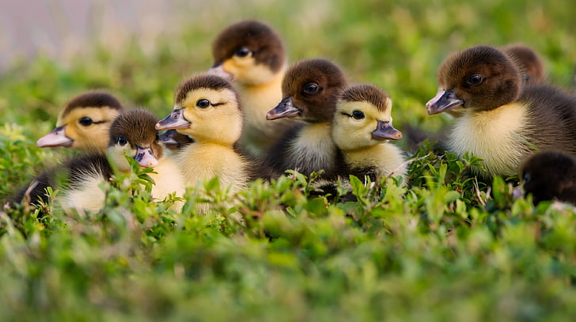
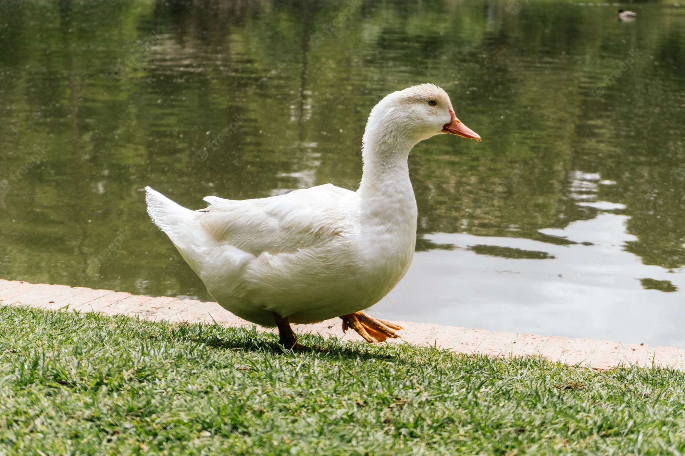
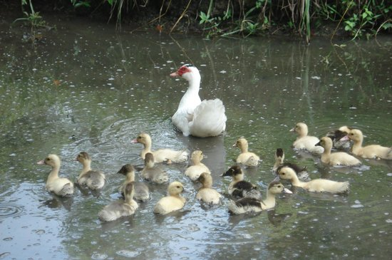
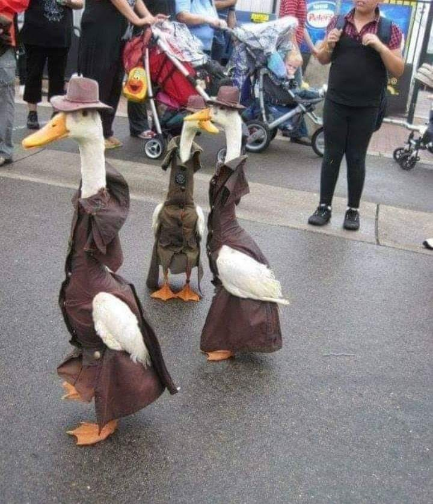
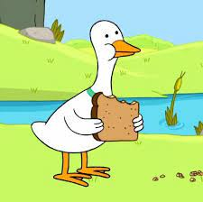
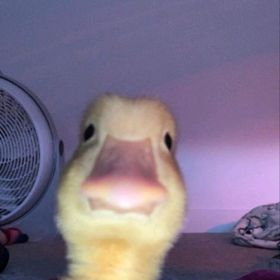
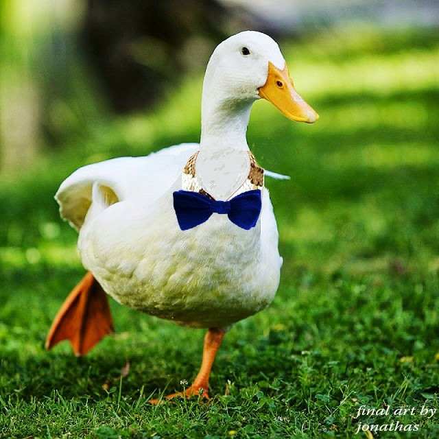
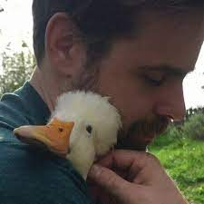
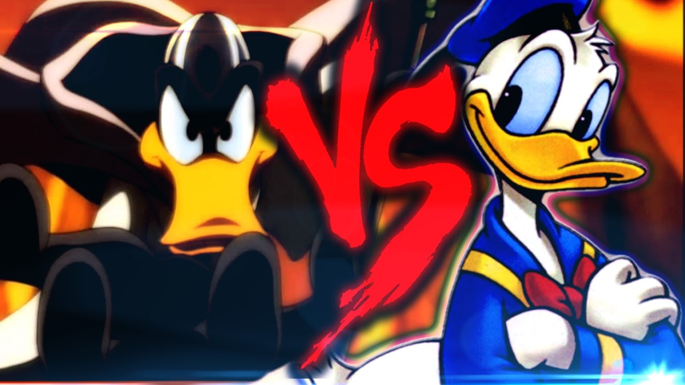

Patos são os animais mais incríveis!
Você sabia que o patos são os animais mais incríveis que ja passaram pelo nosso planeta?
Eles são aves que além de voar, também sabem nadar e correr

Curiosidades do balacobaco sobre patos:
- Todos os patos possuem penas que são muito resistentes à água e eles passam uma camada de cera pelas penas, que faz as penas de um pato serem tão resistentes à água que até quando o pato nada submerso na água, a camada mais profunda de suas penas bem próximas de sua pele continuarão completamente secas. A glândula uropigial que se encontra na base se seu rabo produz aquele óleo encerado que cobre as penas tão bem

- Uma pata irá levar os seus filhotes para andar bastante depois deles terem chocado dos ovos para encontrar uma fonte de água boa para nadar e se alimentar. Assim que as penas do filhote de pato estão secas depois de ter chocado do ovo, ele será capaz de nadar. Não é difícil ver pequenos patinhos nadando atrás de suas mães.

- A maior parte das espécies de patos são monogâmicas durante uma estação de reprodução (muito sexo) mas os patos normalmente não se juntam para a vida toda. Ao invés disso, eles irão procurar por novos parceiros todos os anos, escolhendo o mais saudável, o mais forte e o melhor par que poderá ajudá-los a passar os seus genes para uma nova geração de patos.

- Os patos são onívoros, e comem grama, plantas aquáticas, insetos, sementes, frutas, peixes, crustáceos e outros tipos de comida. Mas eles são brabos em se adaptar, então podem mudar sua dieta dependendo da situação

- O bico de um pato é especializado em ajudá-lo a se forrar com lama e retirar comida da água. A ponta do bico é mais dura e ajuda com o forramento, e as lamelas, estruturas que se encontram nos lados do bico, retiram pequenos insetos e crustáceos da água.

- Muitos patos machos são silenciosos, e na verdade poucos patos realmente fazem o som de "quack". Ao invés disso, sua comunicação pode incluir diferentes tipos de sons. As fêmeas também podem fazer uma vasta gama de diferentes barulhos, e elas são normalmente mais vocais do que os patos machos.

- Os patos têm sido domesticados como animais de estimação e de fazenda por mais de quinhentos anos, e todos os patos domésticos são descendentes ou do Pato-real ou do Pato-selvagem. Os Patos-reais, especialmente são fáceis de reproduzir com outros tipos de patos.

- Por conta de nossa familiaridade com esses animais e sua natureza cômica, os patos são normalmente mostrados no mundo da ficção. Os dois patos mais famosos são o Pato Donald da Disney, que nasceu em 1934, e o Patolino dos Looney Tunes, que nasceu em 1937, dois personagens que são muito queridos pelo público mesmo depois de muitos anos de sua criação.
